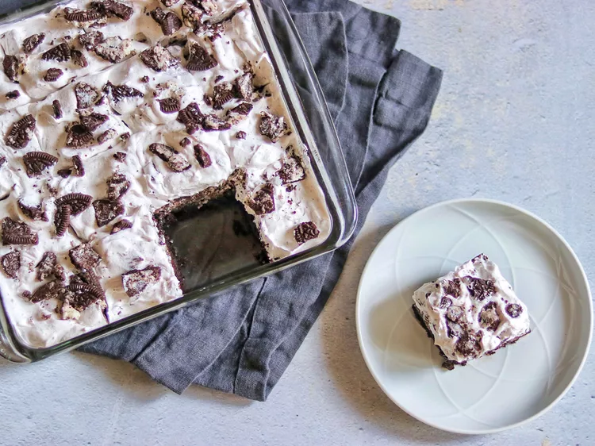

Cookies & Cream Brownies

Soft and gooey on the inside, crisp on the outside dark chocolate brownies are
topped with a layer of creamy topping and crushed cookies in this decadent but
easy dessert.
Ingredients
- 1 and 1/2 cups white sugar
- 3/4 cup all-purpose flour
- 1/2 cup high-quality unsweetened cocoa powder
- 1/2 teaspoon salt
- 1/4 teaspoon baking powder
- 3/4 cup unsalted butter, melted
- 3 large eggs
- 1 teaspoon vanilla extract
- 32 chocolate sandwich cookies, divided
- 1 (8ounce) container frozen whipped topping (such as Cool Whip), thawed
Steps
- Preheat the oven to 350 degrees F (175 degrees C). Grease a 9-inch square baking pan.
- Mix sugar, flour, cocoa powder, salt, and baking powder together in a mixing bowl.
- Whisk butter, eggs, and vanilla together in a separate bowl. Add butter mixture to the
flour mixture and mix until well combined.
- Pour 1/2 of the batter into the prepared baking pan and smooth out with a spatula. Add
16 OREO® cookies in an even layer (4 rows of 4 cookies), then spread the remaining 1/2
of the batter over top.
- Bake in the preheated oven until edges are brown and center is set, 30 to 35 minutes.
- Remove pan from the oven and set on a wire rack. Let brownies cool completely, at least 30
minutes.
- Crush 12 of the remaining OREO® cookies. Place the whipped topping in a bowl and fold in
the crushed cookies. Spread over the top of the brownies. Crush the remaining 4 cookies,
then sprinkle over the top of the whipped cream mixture.
- Keep refrigerated until you are ready to slice and serve.
Back To Home